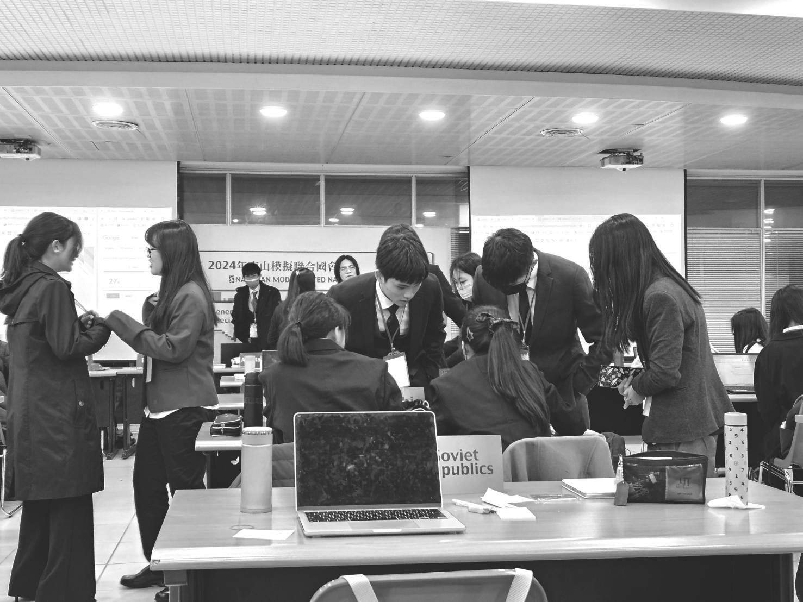

Suez Canal Crisis: Egypt Absent the Next Day! UK and France Unjustly Declare War

In response to the issues arising from Egypt's nationalization of the Suez Canal, the United Nations had originally planned to convene a meeting for discussion. Unfortunately, the veto power exercised by the UK and France obstructed this process, preventing the issue from entering the regular General Assembly discussion. Consequently, the United Nations had no choice but to convene an Emergency Special Session. When the Security Council fails to reach a consensus on a particular issue, the General Assembly can convene an Emergency Special Session for deliberation within 24 hours. This Emergency Special Session marks the first of its kind since the establishment of the United Nations.
Issuing the "Ultimatum": UK and France Stand Alone
During the first day of the session, discussions primarily focused on a ceasefire in the Suez Canal. At this critical juncture, the UK and France issued an "ultimatum," stating that if the Egyptian military did not withdraw from the canal, they would deploy forces to safeguard its security. This move immediately sent shockwaves across the world. While the United States and Israel engaged in intense negotiations during the discussion phase, most countries opted for silence. Later, when Egypt and Israel confronted each other, Egypt, facing invasion, failed to gain the upper hand, with the Israeli representative relentlessly pressing. Negotiations continued, with the involvement of the Soviet Union. With most countries taking a stance against the UK and France, coupled with the initial passive discussions, the two nations issued the "ultimatum," highlighting their isolation on the diplomatic stage. Particularly notable was the wavering stance of the UK, with its representative oscillating between pursuing peace and seeking self-interest.
France: Sometimes a Nation's Interests Trump Peace
During the conference, when asked if France's intervention was motivated by financial concerns, the French affirmative response attracted attention. Later, they even stated that national interests could take precedence over peace. This raised concerns in the United States. In reality, Egypt's nationalization policy lacked thorough measures in handling shares, prompting the U.S. to plan further discussions on the sovereignty of the Suez Canal and the ownership of the canal company in the next day's meeting.
According to the Constantinople Agreement, the canal must be international. Egypt's nationalization, while flawed, could ensure the stability of canal sovereignty, preventing it from being divided among multiple countries. If the UK and France indeed decided to intervene militarily (as assumed the following day), it would mean disregarding world peace, and prioritizing their own interests selfishly. Egypt's government implemented nationalization to remove British and French influence from its territory. However, the intervention of the UK and France revealed their ambitions once again – another attempt to expand their colonial territories.
Ignoring All Discussions: UK and France Unjustly Declare War!
On the second day of the conference, the U.S. intended to continue discussions on the sovereignty of the Suez Canal based on the previous day's context. However, the entire venue was thrown into chaos: the UK and France declared war! They argued that the conference's progress was too slow, and discussions on the ceasefire agreement had not advanced, justifying their military intervention.
Even though Israel had already agreed to the ceasefire request, and Egypt seemed willing to consider it, they claimed their actions were for peace or security. France asserted that their military intervention aimed at regional peace and that airstrikes would only target military fortifications, avoiding harm to civilians.
However, this assertion was implausible. War inevitably results in casualties. France's statements revealed their cunning nature, placing their interests above all else and attempting to resurrect the image of their former colonial empire. The UK, on the other hand, displayed a guilty response when questioned about the reasons for military intervention. If the UK and France were truly intervening for their interests, then obedient Israel, agreeing to the proposal, could not escape suspicion of collusion.
Egypt's Unjustified Absence: Slow Progress in the Conference
On the second day of the session, Egypt's absence drew attention. In the previous day's meeting, the Egyptian representative appeared indecisive in the face of proposals from other countries, swaying like a puppet. At times, they believed a ceasefire was possible, while at other times, they thought everything could be left to France to handle. When questioned, their responses were evasive, going around in circles. While there is speculation that their absence was to discuss matters domestically, the specific reasons were not disclosed.
In this conference, an interesting phenomenon of the modern era emerged: Israel questioning the Egyptian representative, with the Soviet Union stepping in to provide answers. This perfectly illustrated Egypt's alignment with communist forces, possibly already under Soviet control.
Despite the lack of progress in the conference due to Egypt's absence and the outbreak of military intervention by the UK and France, developments on issues such as the sovereignty and operation of the Suez Canal gradually took shape. Turkey proposed establishing a new international maritime organization dedicated to overseeing the Suez Canal, gaining support from several countries in the assembly, including the United States. Perhaps future conferences will move in this direction.
The surprise attack by the UK and France caught the international community off guard. In the current era, vehemently expelling colonialism from the Earth, their actions seem out of place. The specific future developments remain uncertain, and we await the ongoing coverage of the Emergency Special Session by this newspaper.